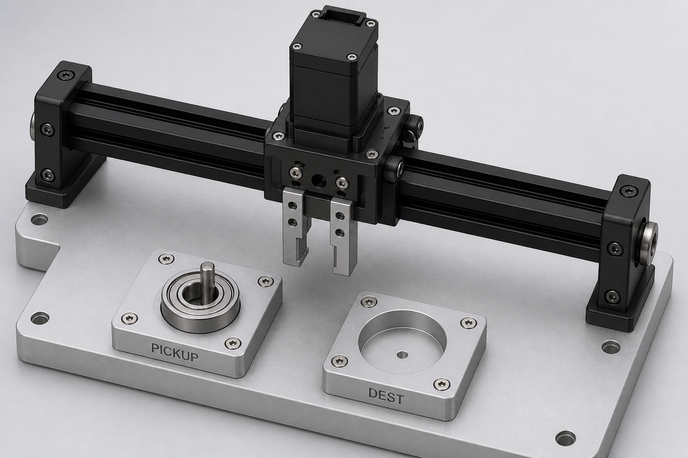
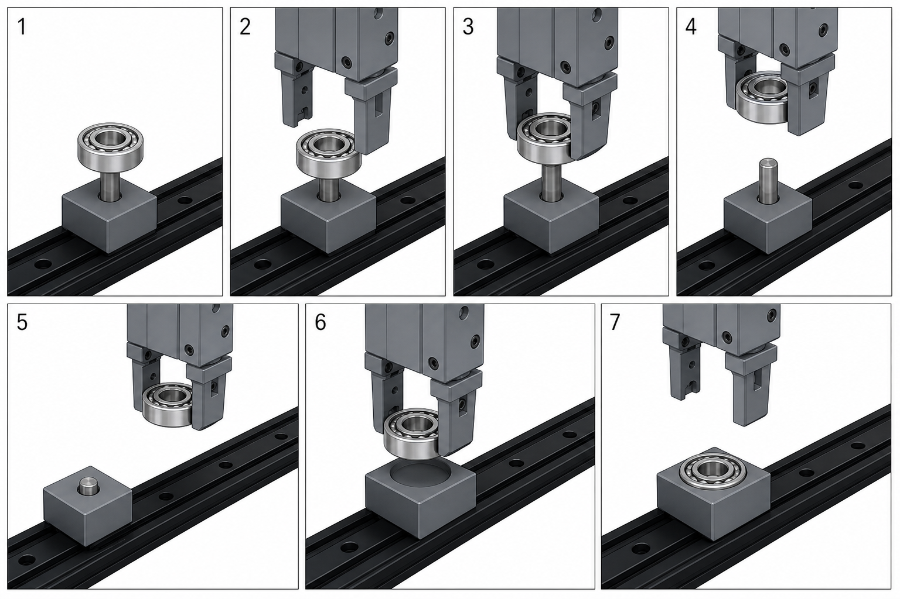
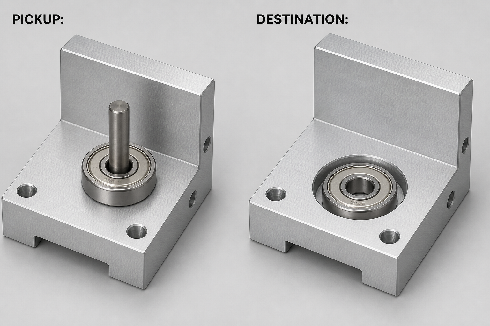

The pick object is a 608ZZ donut. Pickup locates it with a pin through the hole plus a rest. Destination locates it with a shallow cup on the outside. Jaws only hold. One gantry slides X. A short Z on the tool lifts off the pin before that slide.

Whole cell. Left nest = pin through the bearing. Right nest = OD pocket. Rail is the only gantry axis.
Cycle
Located — donut on the rest, pin through the hole. Nest locates. No gripper yet.
Z down, jaws open — come straight down. Must miss the pin.
Close — grab the outside. Pin still locates.
Lift ≥ 15 mm — donut comes off the stick. Sideways is illegal until this is done.
X transfer — one gantry axis. Bearing in the air.
Set in pocket — lower into the OD cup. No pin.
Open, lift, home — part stays in the cup.

Same camera, seven frames. If a frame still has the pin in the hole, you cannot slide X yet.
Why the nests are different
If destination were another pin, you would learn almost nothing new. Pickup = hole locating. Destination = outside locating. The part leaves one datum set and enters another.

Pickup: 1/4" pin, standout ≤ 6 mm inside the 7 mm bearing width. Destination: ~3–4 mm OD pocket.
Locked 2026-08-13. Motion option A. See requirements.md F-08 through F-11.